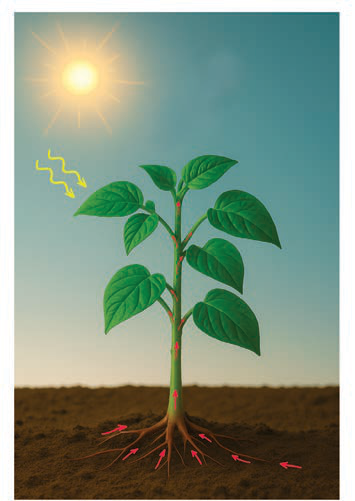

Mahitaji muhimu katika ukuaji wa mimea
Mimea hukua na kustawi vizuri pale inapopata mahitaji yake muhimu. Angalia Kielelezo namba 2 kinachoonesha baadhi ya mahitaji muhimu katika ukuaji wa mmea.

Jua
(Mwanga na joto)
Hewa
(Kabonidayoksaidi na oksijeni)
Maji na virutubisho